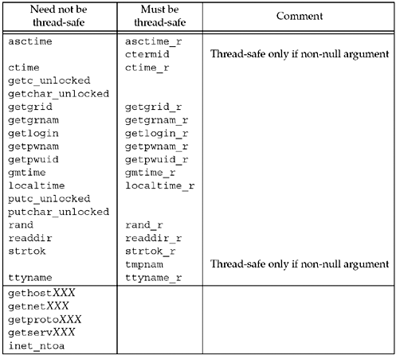

| [ Team LiB ] |
|
26.4 TCP Echo Server Using ThreadsWe now redo our TCP echo server from Figure 5.2 using one thread per client instead of one child process per client. We also make it protocol-independent, using our tcp_listen function. Figure 26.3 shows the server. Create thread17–21 When accept returns, we call pthread_create instead of fork. The single argument that we pass to the doit function is the connected socket descriptor, connfd.
Thread function23–30 doit is the function executed by the thread. The thread detaches itself since there is no reason for the main thread to wait for each thread it creates. The function str_echo does not change from Figure 5.3. When this function returns, we must close the connected socket since the thread shares all descriptors with the main thread. With fork, the child did not need to close the connected socket because when the child terminated, all open descriptors were closed on process termination (see Exercise 26.2). Also notice that the main thread does not close the connected socket, which we always did with a concurrent server that calls fork. This is because all threads within a process share the descriptors, so if the main thread called close, it would terminate the connection. Creating a new thread does not affect the reference counts for open descriptors, which is different from fork. There is a subtle error in this program, which we will describe in detail in Section 26.5. Can you spot the error (see Exercise 26.5)? Figure 26.3 TCP echo server using threads (see also Exercise 26.5).threads/tcpserv01.c
1 #include "unpthread.h"
2 static void *doit(void *); /* each thread executes this function */
3 int
4 main(int argc, char **argv)
5 {
6 int listenfd, connfd;
7 pthread_t tid;
8 socklen_t addrlen, len;
9 struct sockaddr *cliaddr;
10 if (argc == 2)
11 listenfd = Tcp_listen(NULL, argv[1], &addrlen);
12 else if (argc == 3)
13 listenfd = Tcp_listen(argv[1], argv[2], &addrlen);
14 else
15 err_quit("usage: tcpserv01 [ <host> ] <service or port>");
16 cliaddr = Malloc(addrlen);
17 for (; ; ) {
18 len = addrlen;
19 connfd = Accept(listenfd, cliaddr, &len);
20 Pthread_create(&tid, NULL, &doit, (void *) connfd);
21 }
22 }
23 static void *
24 doit(void *arg)
25 {
26 Pthread_detach(pthread_self());
27 str_echo((int) arg); /* same function as before */
28 Close((int) arg); /* done with connected socket */
29 return (NULL);
30 }
Passing Arguments to New ThreadsWe mentioned that in Figure 26.3, we cast the integer variable connfd to be a void pointer, but this is not guaranteed to work on all systems. To handle this correctly requires additional work. First, notice that we cannot just pass the address of connfd to the new thread. That is, the following does not work:
int
main(int argc, char **argv)
{
int listenfd, connfd;
...
for ( ; ; ) {
len = addrlen;
connfd = Accept(listenfd, cliaddr, &len);
Pthread_create(&tid, NULL, &doit, &connfd);
}
}
static void *
doit(void *arg)
{
int connfd;
connfd = * ((int *) arg);
pthread_detach (pthread_self());
str_echo (connfd); /* same function as before */
Close (connfd); /* done with connected socket */
return (NULL);
}
From an ANSI C perspective this is acceptable: We are guaranteed that we can cast the integer pointer to be a void * and then cast this pointer back to an integer pointer. The problem is what this pointer points to. There is one integer variable, connfd in the main thread, and each call to accept overwrites this variable with a new value (the connected descriptor). The following scenario can occur:
Even though two threads are created, both will operate on the final value stored in connfd, which we assume is 6. The problem is that multiple threads are accessing a shared variable (the integer value in connfd) with no synchronization. In Figure 26.3, we solved this problem by passing the value of connfd to pthread_create instead of a pointer to the value. This is fine, given the way that C passes integer values to a called function (a copy of the value is pushed onto the stack for the called function). Figure 26.4 shows a better solution to this problem. Figure 26.4 TCP echo server using threads with more portable argument passing.threads/tcpserv02.c
1 #include "unpthread.h"
2 static void *doit(void *); /* each thread executes this function */
3 int
4 main(int argc, char **argv)
5 {
6 int listenfd, *iptr;
7 thread_t tid;
8 socklen_t addrlen, len;
9 struct sockaddr *cliaddr;
10 if (argc == 2)
11 listenfd = Tcp_listen(NULL, argv[1], &addrlen);
12 else if (argc == 3)
13 listenfd = Tcp_listen(argv[1], argv[2], &addrlen);
14 else
15 err_quit("usage: tcpserv01 [ <host> ] <service or port>");
16 cliaddr = Malloc(addrlen);
17 for ( ; ; ) {
18 len = addrlen;
19 iptr = Malloc(sizeof(int));
20 *iptr = Accept(listenfd, cliaddr, &len);
21 Pthread_create(&tid, NULL, &doit, iptr);
22 }
23 }
24 static void *
25 doit(void *arg)
26 {
27 int connfd;
28 connfd = *((int *) arg);
29 free(arg);
30 Pthread_detach(pthread_self());
31 str_echo(confd); /* same function as before */
32 Close(confd); /* done with connected socket */
33 return (NULL);
34 }
17–22 Each time we call accept, we first call malloc and allocate space for an integer variable, the connected descriptor. This gives each thread its own copy of the connected descriptor. 28–29 The thread fetches the value of the connected descriptor and then calls free to release the memory. Historically, the malloc and free functions have been nonre-entrant. That is, calling either function from a signal handler while the main thread is in the middle of one of these two functions has been a recipe for disaster, because of static data structures that are manipulated by these two functions. How can we call these two functions in Figure 26.4? POSIX requires that these two functions, along with many others, be thread-safe. This is normally done by some form of synchronization performed within the library functions that is transparent to us. Thread-Safe FunctionsPOSIX.1 requires that all the functions defined by POSIX.1 and by the ANSI C standard be thread-safe, with the exceptions listed in Figure 26.5. Figure 26.5. Thread-safe functions. Unfortunately, POSIX says nothing about thread safety with regard to the networking API functions. The last five lines in this table are from Unix 98. We talked about the nonre-entrant property of gethostbyname and gethostbyaddr in Section 11.18. We mentioned that even though some vendors have defined thread-safe versions whose names end in _r, there is no standard for these functions and they should be avoided. All of the nonre-entrant getXXX functions were summarized in Figure 11.21. We see from Figure 26.5 that the common technique for making a function thread-safe is to define a new function whose name ends in _r. Two of the functions are thread-safe only if the caller allocates space for the result and passes that pointer as the argument to the function. |
| [ Team LiB ] |
|